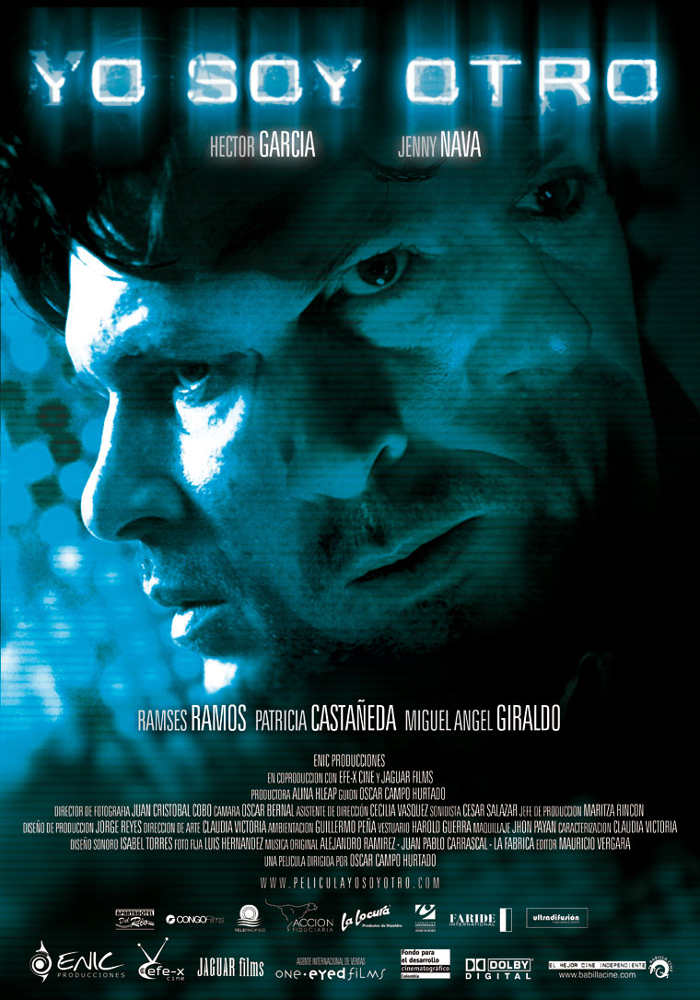

Original soundtrack for the feature film 'Yo Soy Otro' by Oscar Campo

This soundtrack draws from trip hop, electronic, and industrial music, complementing the dark and oppressive atmosphere characteristic of the film.
Synopsis
Cali, Colombia, year 2002. José González, a middle-aged systems engineer, discovers on his skin the signs of lithomiasis, a strange and deadly disease that, according to media reports, has arrived in the city from the Amazon rainforest. People attacked by the virus die within days of contracting the disease, as their bodies fall prey to a second skin of voracious bacteria. Horrified by what the disease has begun to do to his body, José attempts to take his own life. At the moment of pointing a revolver in his mouth, he is shaken by a violent explosion: a bomb has been placed in the neighborhood. That night and during the following days, José discovers many doubles of himself, as if in the city his exploded and sick ego had multiplied to infinity. All the doubles are infected with the same virus and are killing each other in endless fratricidal struggles. And all are equal in cruelty, beyond the reasons that justify their struggles.